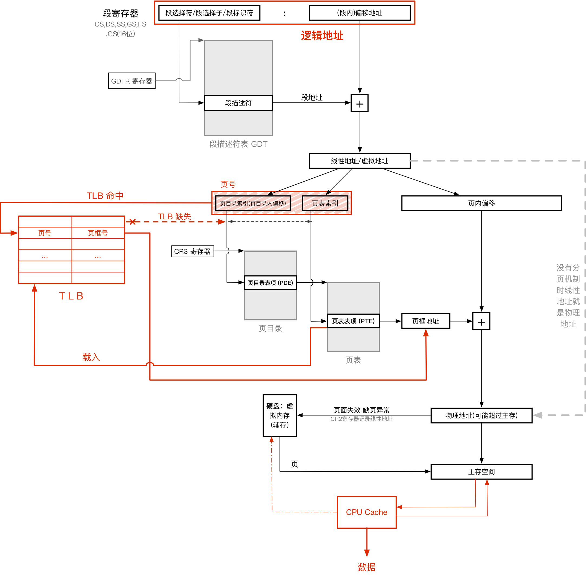

<!DOCTYPE html>
<html>
<head><meta name="generator" content="Hexo 3.8.0">
  <!-- hexo-inject:begin --><!-- hexo-inject:end --><meta charset="utf-8">
  
  <title>virtual memory and tlb | 浙江大学超算队</title>
  <meta name="viewport" content="width=device-width, initial-scale=1, maximum-scale=1">
  
  <meta name="keywords" content="TechOperating SusyemVirtual MemoryTLB">
  
  
  
  
  <meta name="description" content="Virtual Memory and TLB虚拟地址空间x86 CPU 的地址总选宽度为32位，理论寻址上限为4GB。而虚拟地址空间的大小就是4GB，占满总线，且空间中的每一个字节分配一个虚拟地址  其中高2G0x80000000 ~ 0xFFFFFFFF为内和空间，由操作系统调用； 低2G0x00000000 ~ 0x7FFFFFFF为用户空间，由用户使用。  在系统中运行的每一个进程都独自拥有">
<meta name="keywords" content="Tech,Operating Susyem,Virtual Memory,TLB">
<meta property="og:type" content="article">
<meta property="og:title" content="Virtual Memory and TLB">
<meta property="og:url" content="http://clusters.zju.edu.cn/2019/03/31/Virtual-Memory-and-TLB/index.html">
<meta property="og:site_name" content="浙江大学超算队">
<meta property="og:description" content="Virtual Memory and TLB虚拟地址空间x86 CPU 的地址总选宽度为32位，理论寻址上限为4GB。而虚拟地址空间的大小就是4GB，占满总线，且空间中的每一个字节分配一个虚拟地址  其中高2G0x80000000 ~ 0xFFFFFFFF为内和空间，由操作系统调用； 低2G0x00000000 ~ 0x7FFFFFFF为用户空间，由用户使用。  在系统中运行的每一个进程都独自拥有">
<meta property="og:locale" content="default">
<meta property="og:image" content="http://clusters.zju.edu.cn/2019/03/31/Virtual-Memory-and-TLB/OG.png">
<meta property="og:image" content="http://clusters.zju.edu.cn/2019/03/31/Virtual-Memory-and-TLB/%232.png">
<meta property="og:image" content="http://clusters.zju.edu.cn/2019/03/31/Virtual-Memory-and-TLB/%231.png">
<meta property="og:image" content="http://clusters.zju.edu.cn/2019/03/31/Virtual-Memory-and-TLB/%237.png">
<meta property="og:image" content="http://clusters.zju.edu.cn/2019/03/31/Virtual-Memory-and-TLB/%233.png">
<meta property="og:image" content="http://clusters.zju.edu.cn/2019/03/31/Virtual-Memory-and-TLB/%234.png">
<meta property="og:image" content="http://clusters.zju.edu.cn/2019/03/31/Virtual-Memory-and-TLB/%236.png">
<meta property="og:updated_time" content="2019-05-11T14:29:55.737Z">
<meta name="twitter:card" content="summary">
<meta name="twitter:title" content="Virtual Memory and TLB">
<meta name="twitter:description" content="Virtual Memory and TLB虚拟地址空间x86 CPU 的地址总选宽度为32位，理论寻址上限为4GB。而虚拟地址空间的大小就是4GB，占满总线，且空间中的每一个字节分配一个虚拟地址  其中高2G0x80000000 ~ 0xFFFFFFFF为内和空间，由操作系统调用； 低2G0x00000000 ~ 0x7FFFFFFF为用户空间，由用户使用。  在系统中运行的每一个进程都独自拥有">
<meta name="twitter:image" content="http://clusters.zju.edu.cn/2019/03/31/Virtual-Memory-and-TLB/OG.png">
  

  

  <link rel="icon" href="/css/images/ZJUSCT_Icon_Black.png">
  <link rel="apple-touch-icon" href="/css/images/ZJUSCT_Icon_Black.png">
  
    <link href="//fonts.googleapis.com/css?family=Source+Code+Pro" rel="stylesheet" type="text/css">
  
  <link href="https://fonts.googleapis.com/css?family=Open+Sans|Montserrat:700" rel="stylesheet" type="text/css">
  <link href="https://fonts.googleapis.com/css?family=Roboto:400,300,300italic,400italic" rel="stylesheet" type="text/css">
  <link href="//cdn.bootcss.com/font-awesome/4.6.3/css/font-awesome.min.css" rel="stylesheet">
  <style type="text/css">
    @font-face{font-family:futura-pt;src:url(https://use.typekit.net/af/9749f0/00000000000000000001008f/27/l?subset_id=2&fvd=n5) format("woff2");font-weight:500;font-style:normal;}
    @font-face{font-family:futura-pt;src:url(https://use.typekit.net/af/90cf9f/000000000000000000010091/27/l?subset_id=2&fvd=n7) format("woff2");font-weight:500;font-style:normal;}
    @font-face{font-family:futura-pt;src:url(https://use.typekit.net/af/8a5494/000000000000000000013365/27/l?subset_id=2&fvd=n4) format("woff2");font-weight:lighter;font-style:normal;}
    @font-face{font-family:futura-pt;src:url(https://use.typekit.net/af/d337d8/000000000000000000010095/27/l?subset_id=2&fvd=i4) format("woff2");font-weight:400;font-style:italic;}</style>
  <link rel="stylesheet" href="/css/style.css">

  <script src="/js/jquery-3.1.1.min.js"></script>
  <script src="/js/bootstrap.js"></script>

  <!-- Bootstrap core CSS -->
  <link rel="stylesheet" href="/css/bootstrap.css">

  
    <link rel="stylesheet" href="/css/dialog.css">
  

  

  
    <link rel="stylesheet" href="/css/header-post.css"><!-- hexo-inject:begin --><!-- hexo-inject:end -->
  

  
  
  

</head>
</html>


  <body data-spy="scroll" data-target="#toc" data-offset="50">


  

  
    <!-- hexo-inject:begin --><!-- hexo-inject:end --><div id="container">
      <div id="wrap">
        
          <header style="height:75px;" class="main_header">

    <div id="allheader" class="navbar navbar-default navbar-static-top" role="navigation">
        <div class="navbar-inner">

          <div class="container" style="height: 75px;">
            <button type="button" class="navbar-toggle" data-toggle="collapse" data-target=".navbar-collapse">
              <span class="sr-only">Toggle navigation</span>
              <span class="icon-bar"></span>
              <span class="icon-bar"></span>
              <span class="icon-bar"></span>
            </button>

            
              <a class="brand" style="
                 margin-top: 0px;" href="#" data-toggle="modal" data-target="#myModal">
                  
              </a>
            

            <div class="navbar-collapse collapse">
              <ul class="hnav navbar-nav">
                
                  <li> <a class="main-nav-link" href="/">Home</a> </li>
                
                  <li> <a class="main-nav-link" href="/archives">articles</a> </li>
                
                  <li> <a class="main-nav-link" href="/about">About</a> </li>
                
                  <li> <a class="main-nav-link" href="/teamIntro">team intro</a> </li>
                
                  <li> <a class="main-nav-link" href="/contact">join us</a> </li>
                
                  <li><div id="search-form-wrap">

    <form class="search-form">
        <input type="text" class="ins-search-input search-form-input" placeholder>
        <button type="submit" class="search-form-submit"></button>
    </form>
    <div class="ins-search">
    <div class="ins-search-mask"></div>
    <div class="ins-search-container">
        <div class="ins-input-wrapper">
            <input type="text" class="ins-search-input" placeholder="Type something...">
            <span class="ins-close ins-selectable"><i class="fa fa-times-circle"></i></span>
        </div>
        <div class="ins-section-wrapper">
            <div class="ins-section-container"></div>
        </div>
    </div>
</div>
<script>
(function (window) {
    var INSIGHT_CONFIG = {
        TRANSLATION: {
            POSTS: 'Posts',
            PAGES: 'Pages',
            CATEGORIES: 'Categories',
            TAGS: 'Tags',
            UNTITLED: '(Untitled)',
        },
        ROOT_URL: '/',
        CONTENT_URL: '/content.json',
    };
    window.INSIGHT_CONFIG = INSIGHT_CONFIG;
})(window);
</script>
<script src="/js/insight.js"></script>

</div></li>
            </ul></div>
          </div>

      </div>
    </div>

</header>

<div style="height:75px;witdh:100;">


</div>
        

        <div id="content" class="outer">
          
            <section id="main" style="float:none;"><article id="post-Virtual-Memory-and-TLB" style="width: 75%; float:left;" class="article article-type-post" itemscope itemprop="blogPost">
    <div id="articleInner" class="article-inner">
        
        
        <header class="article-header">
            
  
    <h1 class="thumb" itemprop="name">
      Virtual Memory and TLB
    </h1>
  

        </header>
        
        <div class="article-meta">
            
	<a href="/2019/03/31/Virtual-Memory-and-TLB/" class="article-date">
	  <time datetime="2019-03-31T06:05:11.000Z" itemprop="datePublished">2019-03-31</time>
	</a>

            
            
	<a class="article-author">
		<span id="postAuthor">
			Author: 王克
		</span>
	</a>

        </div>
        <div class="article-entry" itemprop="articleBody">
            
            <h1 id="Virtual-Memory-and-TLB"><a href="#Virtual-Memory-and-TLB" class="headerlink" title="Virtual Memory and TLB"></a>Virtual Memory and TLB</h1><h2 id="虚拟地址空间"><a href="#虚拟地址空间" class="headerlink" title="虚拟地址空间"></a>虚拟地址空间</h2><p>x86 CPU 的地址总选宽度为32位，理论寻址上限为4GB。而虚拟地址空间的大小就是4GB，占满总线，且空间中的每一个字节分配一个虚拟地址</p>
<ul>
<li>其中高2G<code>0x80000000 ~ 0xFFFFFFFF</code>为内和空间，由操作系统调用；</li>
<li>低2G<code>0x00000000 ~ 0x7FFFFFFF</code>为用户空间，由用户使用。</li>
</ul>
<p>在系统中运行的每一个进程都独自拥有一个虚拟空间，进城之间的虚拟空间不共用。</p>
<p>虚拟地址空间是一种通过机制映射出来的空间，与实际物理空间大小无必然联系，在x86保护模式下，无论计算及实际主存是512MB还是8GB，虚拟地址空间总是4GB，<strong>这是由CPU和操作系统的宽度决定的</strong>，即：</p>
<blockquote>
<p>CPU地址总线宽度 → 物理地址范围<br>CPU的ALU宽度 → 操作系统位数 → 虚拟地址范围</p>
</blockquote>
<h3 id="虚拟内存"><a href="#虚拟内存" class="headerlink" title="虚拟内存"></a>虚拟内存</h3><p>虚拟地址空间 = 主存 + 虚拟内存(交换空间 Swap Space)</p>
<p>虚拟内存：将硬盘的一部分作为存储器使用，来扩充物理内存。</p>
<p>利用了自动覆盖、交换技术。内存中存不下、暂时不用的内容会存在硬盘中。</p>
<blockquote>
<p>Assume: 32位操作系统，32位寻址总线宽度 → 4G线性空间</p>
</blockquote>
<h2 id="保护模式下的进程运行"><a href="#保护模式下的进程运行" class="headerlink" title="保护模式下的进程运行"></a>保护模式下的进程运行</h2><p>虚拟地址空间是硬件行为，CPU自动完成(同时与操作系统协作)虚拟地址到物理地址(可能差熬过实际内存，这样会产生一个异常中断，揭晓来有操作系统处理(如从虚拟内存中调出对应的页框内容))。</p>
<p>所以，一个程序若运行在保护模式下，其汇编级、机器语言级的寻址都是用的虚拟地址，即在一般的编程中不会接触到物理一层。</p>
<p>在进程被加载时，系统为进程建立唯一的数据结构<code>进程控制块(PCB = Process Control Block)</code>，直至进程结束。</p>
<p>PCB中描述了该进程的现状以及控制运行的全部信息，有了PCB，一个进程才可以在保护模式下和其他进程一起被并发地运行起来，操作系统通过PCB对进程进行控制。</p>
<p>PCB中的程序ID(PID(unix、linux)、句柄(windows))是进程的唯一标识；PCB中的一个指针指向 <strong>页表</strong> ，这些都与地址转化有关。</p>
<h2 id="地址转化"><a href="#地址转化" class="headerlink" title="地址转化"></a>地址转化</h2><p>地址转化的全过程可以用以下这张图来概括：</p>
<p></p>
<p>以下是具体步骤介绍。</p>
<h3 id="1-逻辑地址-→-线性地址-段式内存管理，Intel早期策略的保留"><a href="#1-逻辑地址-→-线性地址-段式内存管理，Intel早期策略的保留" class="headerlink" title="1. 逻辑地址 → 线性地址 (段式内存管理，Intel早期策略的保留)"></a>1. 逻辑地址 → 线性地址 (段式内存管理，Intel早期策略的保留)</h3><ul>
<li><p>段内偏移地址(32位)</p>
</li>
<li><p>段选择符：16位长的序列，是索引值，定位段描述符；结构：<br></p>
<ul>
<li>高13位为表内索引号 —— 但注意由于GDT第一项留空，所以索引要先加1；</li>
<li>而2位为TI表指示器，0是指GDT，1是指LDT；</li>
<li>0、1位是RPL请求者特权级，00最高，11最低 —— 在x86保护模式下修改寄存器是系统之灵，必须有对应的权限才能修改(当前执行权限和段寄存器中(被修改的)的RPL均不低于目标段的RPL)</li>
</ul>
</li>
<li><p>段描述符：8x8=64位长的结构，用来描述一个段的各种属性。结构：<br> </p>
<ul>
<li>0、1字节+6字节低4位(20位) 段边界/段长度：最大1MB或者4G(看粒度位的单位)</li>
<li>2、3、4、7字节(32位) 段基址：4G线性地址的任意位置(不一定非要被16整除)</li>
<li>6、7字节的奇怪设计是为了兼容80286(24位地址总线)</li>
<li>剩下的那些是段属性，详见<code>20180819143434</code></li>
</ul>
</li>
<li><p>段描述表：多任务操作系统中，含有多个任务，而每个人物都有多个段，其段描述符存于段描述表中。<br>IA-32处理器有3个段描述表：GDT、LDT和IDT。</p>
<ul>
<li>GDT(Global Descripter Table) 全局段描述符表：一个系统一般只有一个GDT，含有每一个任务都可以访问的段；通常包含操作系统所使用的代码段、数据段和堆栈段，GDT同时包含各进程LDT数据段项，以及进程间通讯所需要的段。<br>GDTR是CPU提供的寄存器，存储GDT的位置和边界；在32位模式下RGDT有48位长(高32位基地址+低16位边界)，在32e模式下有80位长(高64位基地址+低16位边界)。<br>GDT的第一个表项留空不用，是空描述符，所以索引号要加1。<br>GDT最多128项。</li>
<li>LDT(Local Descripter Table) 局部段描述符表：16位长，属于某个进程。一个进程一个LDT，对应有RLDT寄存器，进程切换时RLDT改变。<br>RLDT和RGDT不一样，RLDT是一个索引值而不是实际指向，指向GDT中某一个LDT描述项。所以如果要获取LDT中的某一项，先要访问GDT找到对应LDT，再找到LDT中的一项。<br>编译程序时，程序内赋予了虚拟页号。在程序运行时，通过对应LDT转译成物理地址。故虚拟页号是局部性的、不同进程的页号会有冲突。<br>LDT没有空选择子。</li>
<li>IDT(Interrupt Descripter Table) 中断段描述符表；一个系统一般也只有一个。</li>
<li>以下这个图能做一点解释：<br></li>
</ul>
</li>
</ul>
<h3 id="2-线性地址-→-物理地址-页式内存管理"><a href="#2-线性地址-→-物理地址-页式内存管理" class="headerlink" title="2. 线性地址 → 物理地址 (页式内存管理)"></a>2. 线性地址 → 物理地址 (页式内存管理)</h3><p>这一步由CPU的页式管理单元来负责转换。——MMU(内存管理单元)。</p>
<ul>
<li><p>线性地址可以拆分为三部分(或者两部分)：<br></p>
</li>
<li><p>页(Page)：线性地址被划分为大小一致的若干内存区域，其对应映射到大小相同的与物理空间区域页框(Frame)上。这个映射不一定是连贯而有序的。</p>
</li>
<li><p>CR3：页目录基址寄存器。对于每一个进程，CR3的内容不同(有点像RLDT)，页目录基址也不同，线性地址-物理地址的映射也不同。</p>
</li>
<li><p>页目录：占用一个4kb的内存页，最多存储1024个页目录表项(PDE)，一个PDE有4字节。在没启用PAE时，有两种PDE，规格不同。</p>
</li>
<li><p>页目录表项(PDE)：每个程序有多个页表，即拥有多个PDE。PDE的结构如下：<br><br>12~31位(20位)表示页表起始物理地址的高20位(页表基址低12位为0，即一定以4kb对齐)。</p>
</li>
<li><p>页表：一个页表占4kb的内存页，最多存储1024个页表项(PTE)，一个PTE是4字节。页表的基址是4kb对齐的，低12位是0。</p>
</li>
</ul>
<p>采用对页表项的二级管理模式(也目录→页表→页)能够节约空间。因为不存在的页表就可以不分配空间，并且对于Windows来说只有一级页表才会存在主存中，二级可以存在辅存中——不过Linux中它们都常驻主存。</p>
<p>一些CPU会提供更多级的架构，如三级、四级。Linux中，有对应的高层次抽象，提供了一个四层页管理架构：<br><br>把中间的某几个定为长度为0，就可以调整架构级数。如“四化二”：某地址0x08147258，对应的PUD、PMD里只有一个表项为PUD→PMD，PMD→PT；划分的时候，PGD=0000100000，PUD=PMD=0，PT=0101000111.</p>
<h3 id="3-TLB-转换检测缓冲区、快表、转译后被缓冲区"><a href="#3-TLB-转换检测缓冲区、快表、转译后被缓冲区" class="headerlink" title="3. TLB (转换检测缓冲区、快表、转译后被缓冲区)"></a>3. TLB (转换检测缓冲区、快表、转译后被缓冲区)</h3><p>处理器中，一个具有并行朝赵能力的特殊高速缓存器，存储最近访问过的一些页表项(时空局部性原理，减少页映射的内存访问次数)。</p>
<p>TLB较贵，通常能够存放16~512个页表项。</p>
<ul>
<li><p>TLB命中：直接取出对应的页表项</p>
</li>
<li><p>TLB缺失：先淘汰TLB中的某一项(TLB替换策略，一些算法，可以由硬件或软件来实现)</p>
<ul>
<li>硬件处理TLB Miss：CPU会遍历页表，找到正确的PTE；如果没有找到，CPU就会发起一个页错误并将控制权交给操作系统。</li>
<li>软件处理TLB Miss：CPU直接发出未命中错误，让操作系统来处理。</li>
</ul>
</li>
<li><p>脏记录：当TLB中某个PTE项失效(如切换进程、进程退出、虚拟页换出到磁盘)，PTE标记为不存在，此时映射已经不成立了。<br>操作系统要保证即时刷新掉这些脏记录，不同的CPU有不同的刷新TLB方法，但每次都完全刷新TLB会很慢，所以现在有一些策略，扩展对一个PTE的描述(如针对某个进程、空间的标识，如果目前进程与PTE相关，就会忽略掉)，这样可以让多个进程同时共存TLB</p>
</li>
</ul>
<h2 id="Linux-段式管理"><a href="#Linux-段式管理" class="headerlink" title="Linux 段式管理"></a>Linux 段式管理</h2><p>Linux似乎没有理会Intel的那一套段的机制，而是做了一个高级的抽象。<br>Linux对所有的进程使用了相同的段来对指令和数据寻址，让每个段寄存器都指向同一个段描述符，让这个段描述符的基址为0，长度为4G。即用这种方式略去了段式内存管理。<br>对应多有用户代码段、用户数据段、内核代码段和内核数据段。可以在<code>segment.h</code>中看到，四种段对应的段基址都是0，这就是“平坦内存模型”，这样就有<code>段内偏移地址=逻辑地址</code></p>
<p>且，四种段对应的都为GDT。即Linux大多数情况都不使用LDT，除非使用wine等Windows防真程序。</p>
<p>Linux 0.11中每个进程划分64MB的虚拟内存空间。故逻辑地址范围为0~0x4000000</p>

            
        </div>
        <footer class="article-footer">
            
            
            <h3>评论区</h3>

<script src="//cdn1.lncld.net/static/js/3.0.4/av-min.js"></script>
<script src="//unpkg.com/valine/dist/Valine.min.js"></script>
<!--<script src="//cdn.jsdelivr.net/npm/leancloud-storage@latest/dist/av-min.js"></script>
    <script src='//cdn.jsdelivr.net/npm/valine@latest/dist/Valine.min.js'></script>-->
<div id="vcomments"></div>
<script>
    var notify = 'false' == true ? true : false;
    var verify = 'false' == true ? true : false;
    var visitor = 'true' == true ? true : false;
    new Valine({
        el: '#vcomments',
        notify: notify,
        verify: verify,
        app_id: 'vzkq3TwdOhGcrpi7lsHAoz97-gzGzoHsz',
        app_key: 'St7KQEXXD6TapeMcRL7mjd2d',
        lang: 'en',
        placeholder: 'ヾﾉ≧∀≦)o快来评论一下吧!',
        avatar: 'monsterid',
        pageSize: '10',
        visitor: visitor
    });
</script>


            
            
            
            <div>
    <ul class="post-copyright">
        <li class="post-copyright-author">
            <strong>Post author:  </strong>ZJUSCT
        </li>
        <li class="post-copyright-link">
            <strong>Post link:  </strong>
            <a href="/2019/03/31/Virtual-Memory-and-TLB/" target="_blank" title="Virtual Memory and TLB">http://clusters.zju.edu.cn/2019/03/31/Virtual-Memory-and-TLB/</a>
        </li>
        <li class="post-copyright-license">
            <strong>Copyright Notice:  </strong>
            All articles in this blog are licensed under <a rel="license" href="https://creativecommons.org/licenses/by-nc-nd/4.0/" target="_blank" title="Attribution-NonCommercial-NoDerivatives 4.0 International (CC BY-NC-ND 4.0)">CC BY-NC-ND 4.0</a>
            unless stating additionally.
        </li>
    </ul>
    <div>
</div></div>
            

        </footer>
    </div>
    
    
<nav id="article-nav">
  
    <a href="/2019/05/11/Image-Restoration-SimpleVersion/" id="article-nav-newer" class="article-nav-link-wrap">
      <strong class="article-nav-caption">Newer</strong>
      <div class="article-nav-title">
        
          基于0-1乘性噪声的朴素图片降噪
        
      </div>
    </a>
  
  
    <a href="/2019/03/31/Install-MySQL-on-CentOS7-Inside-GFW/" id="article-nav-older" class="article-nav-link-wrap">
      <strong class="article-nav-caption">Older</strong>
      <div class="article-nav-title">如何在墙内快速部署CentOS 7的MySQL</div>
    </a>
  
</nav>

    
</article>

<!-- Table of Contents -->

<aside id="toc-sidebar">
    <div id="toc" class="toc-article">
        <strong class="toc-title">Contents</strong>
        
        <ol class="nav"><li class="nav-item nav-level-1"><a class="nav-link" href="#Virtual-Memory-and-TLB"><span class="nav-number">1.</span> <span class="nav-text">Virtual Memory and TLB</span></a><ol class="nav-child"><li class="nav-item nav-level-2"><a class="nav-link" href="#虚拟地址空间"><span class="nav-number">1.1.</span> <span class="nav-text">虚拟地址空间</span></a><ol class="nav-child"><li class="nav-item nav-level-3"><a class="nav-link" href="#虚拟内存"><span class="nav-number">1.1.1.</span> <span class="nav-text">虚拟内存</span></a></li></ol></li><li class="nav-item nav-level-2"><a class="nav-link" href="#保护模式下的进程运行"><span class="nav-number">1.2.</span> <span class="nav-text">保护模式下的进程运行</span></a></li><li class="nav-item nav-level-2"><a class="nav-link" href="#地址转化"><span class="nav-number">1.3.</span> <span class="nav-text">地址转化</span></a><ol class="nav-child"><li class="nav-item nav-level-3"><a class="nav-link" href="#1-逻辑地址-→-线性地址-段式内存管理，Intel早期策略的保留"><span class="nav-number">1.3.1.</span> <span class="nav-text">1. 逻辑地址 → 线性地址 (段式内存管理，Intel早期策略的保留)</span></a></li><li class="nav-item nav-level-3"><a class="nav-link" href="#2-线性地址-→-物理地址-页式内存管理"><span class="nav-number">1.3.2.</span> <span class="nav-text">2. 线性地址 → 物理地址 (页式内存管理)</span></a></li><li class="nav-item nav-level-3"><a class="nav-link" href="#3-TLB-转换检测缓冲区、快表、转译后被缓冲区"><span class="nav-number">1.3.3.</span> <span class="nav-text">3. TLB (转换检测缓冲区、快表、转译后被缓冲区)</span></a></li></ol></li><li class="nav-item nav-level-2"><a class="nav-link" href="#Linux-段式管理"><span class="nav-number">1.4.</span> <span class="nav-text">Linux 段式管理</span></a></li></ol></li></ol>
        
    </div>
</aside>

</section>
          
        </div>

        
        <footer id="footer">
  

  <div class="container">
      	<div class="row">
	      <p style="font-size:12px;margin:0;"> Powered by <a href="http://hexo.io/" target="_blank" style="color:#909090">Hexo</a> </p>
	      <p id="copyRightEn" style="font-size:12px;margin:0;">Copyright &copy; 2014 - 2019 浙江大学超算队 All Rights Reserved.</p>

	       
  		   
		</div>
  </div>
</footer>


<!-- min height -->

<script>
    var wrapdiv = document.getElementById("wrap");
    var contentdiv = document.getElementById("content");
    var allheader = document.getElementById("allheader");

    wrapdiv.style.minHeight = document.body.offsetHeight + "px";
    if (allheader != null) {
      contentdiv.style.minHeight = document.body.offsetHeight - allheader.offsetHeight - document.getElementById("footer").offsetHeight + "px";
    } else {
      contentdiv.style.minHeight = document.body.offsetHeight - document.getElementById("footer").offsetHeight + "px";
    }
</script>

      </div>
      <!-- <nav id="mobile-nav">
  
    <a href="/" class="mobile-nav-link">Home</a>
  
    <a href="/archives" class="mobile-nav-link">Articles</a>
  
    <a href="/about" class="mobile-nav-link">About</a>
  
    <a href="/teamIntro" class="mobile-nav-link">Team Intro</a>
  
    <a href="/contact" class="mobile-nav-link">Join Us</a>
  
</nav> -->
      

<!-- mathjax config similar to math.stackexchange -->

<script type="text/x-mathjax-config">
  MathJax.Hub.Config({
    tex2jax: {
      inlineMath: [ ['$','$'], ["\\(","\\)"] ],
      processEscapes: true
    }
  });
</script>

<script type="text/x-mathjax-config">
    MathJax.Hub.Config({
      tex2jax: {
        skipTags: ['script', 'noscript', 'style', 'textarea', 'pre', 'code']
      }
    });
</script>

<script type="text/x-mathjax-config">
    MathJax.Hub.Queue(function() {
        var all = MathJax.Hub.getAllJax(), i;
        for(i=0; i < all.length; i += 1) {
            all[i].SourceElement().parentNode.className += ' has-jax';
        }
    });
</script>

<script type="text/javascript" src="https://cdn.mathjax.org/mathjax/latest/MathJax.js?config=TeX-AMS-MML_HTMLorMML">
</script>


  <link rel="stylesheet" href="/fancybox/jquery.fancybox.css">
  <script src="/fancybox/jquery.fancybox.pack.js"></script>


<script src="/js/scripts.js"></script>


  <script src="/js/dialog.js"></script>


  


    </div>
  

  <div class="modal fade" id="myModal" tabindex="-1" role="dialog" aria-labelledby="myModalLabel" aria-hidden="true" style="display: none;">
  <div class="modal-dialog">
    <div class="modal-content">
      <div class="modal-header">
        <h2 class="modal-title" id="myModalLabel">ZJUSCT</h2>
      </div>
      <hr style="margin-top:0px; margin-bottom:0px; width:80%; border-top: 3px solid #000;">
      <hr style="margin-top:2px; margin-bottom:0px; width:80%; border-top: 1px solid #000;">


      <div class="modal-body">
      
        <div style="margin:6px;">
        </div>

        <div>
          <a data-toggle="collapse" data-parent="#accordion" href="#collapseThree" aria-expanded="true" aria-controls="collapseThree">&nbsp;&nbsp;&nbsp;&nbsp;&nbsp;&nbsp;About&nbsp;&nbsp;&nbsp;&nbsp;&nbsp;&nbsp;</a>
        </div>

         <div id="collapseThree" class="panel-collapse collapse" role="tabpanel" aria-labelledby="headingThree">
          
          <div class="panel-body">
            浙江大学超算队
          </div>

          <div class="panel-body">
            Copyright © 2019 ZJUSCT All Rights Reserved.
          </div>

        </div>
      </div>


      <hr style="margin-top:0px; margin-bottom:0px; width:80%; border-top: 1px solid #000;">
      <hr style="margin-top:2px; margin-bottom:0px; width:80%; border-top: 3px solid #000;">
      <div class="modal-footer">
        <button type="button" class="close" data-dismiss="modal" aria-label="Close"><span aria-hidden="true">×</span></button>
      </div>
    </div>
  </div>
</div>

  <a id="rocket" href="#top" class=""></a>
  <script type="text/javascript" src="/js/totop.js?v=1.0.0" async=""></script>
  
    <a id="menu-switch"><i class="fa fa-bars fa-lg"></i></a>
  
<script type="text/x-mathjax-config">
    MathJax.Hub.Config({
        tex2jax: {
            inlineMath: [ ["$","$"], ["\\(","\\)"] ],
            skipTags: ['script', 'noscript', 'style', 'textarea', 'pre', 'code'],
            processEscapes: true
        }
    });
    MathJax.Hub.Queue(function() {
        var all = MathJax.Hub.getAllJax();
        for (var i = 0; i < all.length; ++i)
            all[i].SourceElement().parentNode.className += ' has-jax';
    });
</script>
<script src="http://cdn.mathjax.org/mathjax/latest/MathJax.js?config=TeX-AMS-MML_HTMLorMML"></script><!-- hexo-inject:begin --><!-- Begin: Injected MathJax -->
<script type="text/x-mathjax-config">
  MathJax.Hub.Config({"tex2jax":{"inlineMath":[["$","$"],["\\(","\\)"]],"skipTags":["script","noscript","style","textarea","pre","code"],"processEscapes":true},"TeX":{"equationNumbers":{"autoNumber":"AMS"}}});
</script>

<script type="text/x-mathjax-config">
  MathJax.Hub.Queue(function() {
    var all = MathJax.Hub.getAllJax(), i;
    for(i=0; i < all.length; i += 1) {
      all[i].SourceElement().parentNode.className += ' has-jax';
    }
  });
</script>

<script type="text/javascript" src="https://cdnjs.cloudflare.com/ajax/libs/mathjax/2.7.1/MathJax.js">
</script>
<!-- End: Injected MathJax -->
<!-- hexo-inject:end -->
</body>
</html>
